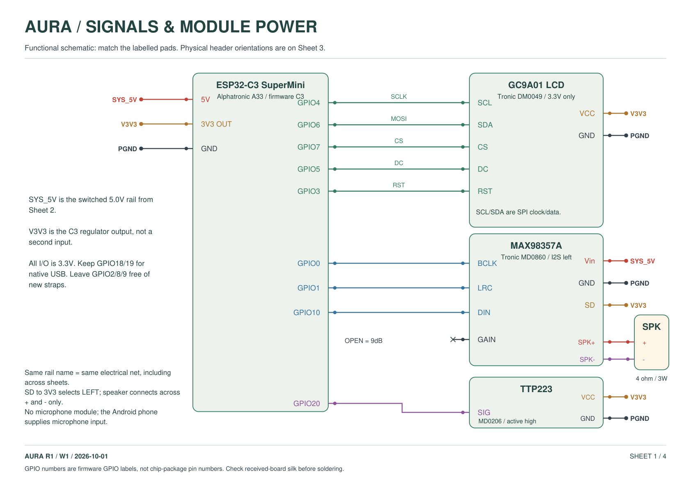
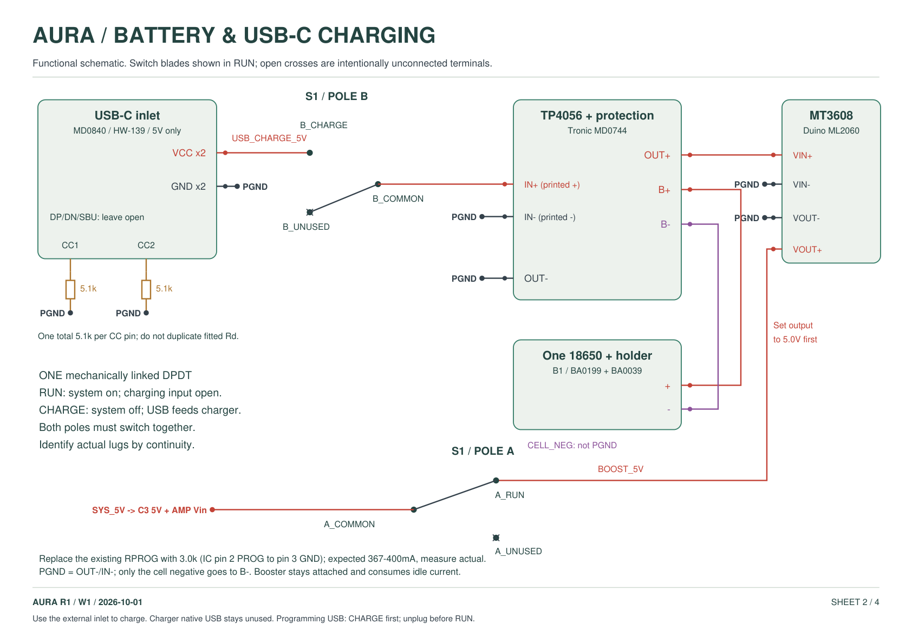
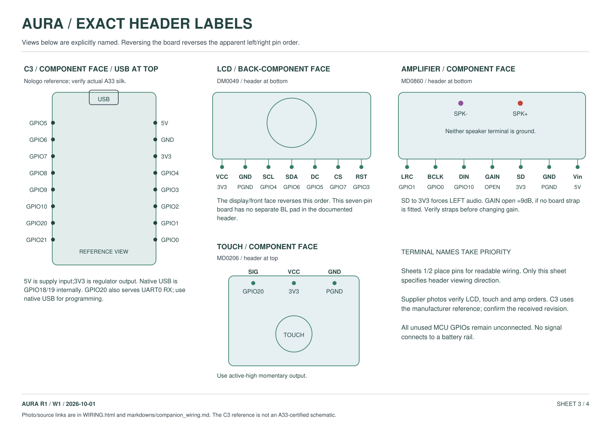
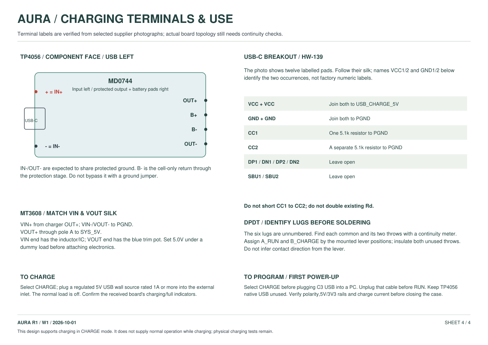

AURA / W1 / 1 OCTOBER 2026
Wire the companion.
The diagrams match the existing C3 firmware and the photographed supplier module labels. Native microphone input comes from the Android phone.
Download the printable four-sheet PDF · Every connection as a CSV · Detailed assembly instructions · CAD overview
Charging works in CHARGE mode. Select CHARGE and connect a regulated5V USB source to the external inlet. The DPDT opens the normal system supply while enabling the charger input. Select RUN after unplugging any C3 programming cable. The TP4056 native USB stays unused.




Firmware pin map
| C3 GPIO | Module terminal | Function |
|---|---|---|
| GPIO4 | LCD SCL | SPI clock; not I2C |
| GPIO6 | LCD SDA | SPI MOSI; not I2C |
| GPIO7 | LCD CS | SPI chip select |
| GPIO5 | LCD DC | Data / command |
| GPIO3 | LCD RST | Display reset |
| GPIO20 | TOUCH SIG | Active-high momentary touch output |
| GPIO0 | AMP BCLK | I2S bit clock |
| GPIO1 | AMP LRC | I2S word select / LRCLK |
| GPIO10 | AMP DIN | I2S data from C3 |
SYS_5V powers C3 5V and amp Vin. C3 3V3 powers LCD VCC, touch VCC and amp SD. All module grounds join PGND. Only cell negative connects to B-. Speaker wires go exclusively to amplifier SPK+ and SPK-.
Before power and final assembly
- Before power: received header names match the shown supplier orientation; IN-/OUT- and boost negatives share the expected protected ground; B- has no external bypass jumper to PGND.
- Bare switch: identify each common and its two throws; poles isolated. RUN closes A_COMMON-A_RUN only; CHARGE closes B_COMMON-B_CHARGE only. Unused throws open/insulated.
- USB inlet alone, disconnected: each CC-to-GND about5.1k ohms; CC1-to-CC2 about10.2k through the two resistors. Verify both VCC pads connect VBUS and both GND pads connect return.
- Before the C3 or amp is attached: calibrate boost VOUT to5.0V under dummy load and check combined peak-load regulation; do not leave it at a factory unknown voltage.
- After RPROG replacement: measure charge current; expected367-400mA, initial limit500mA or the authentic cell limit if lower; check full termination with booster idle load attached.
- CHARGE with external USB only: charger IN+ near5V; SYS_5V and C3 3V3 fall tooff. RUN with external USB only and no programming cable: charger IN+ disconnected; system powered byboost/battery.
- Programming: select CHARGE before plugging the C3's own USB. Unplug that cable before RUN. The TP4056 native USB port stays unused because it bypasses the interlock.
- Closed-case charge and maximum permitted Wi-Fi/audio: measure cell, charger, boost, regulator and contact temperatures; check protection and stable restart near cutoff. No physical tests are claimed.
Do not infer switch lug numbers from the drawing. Its supplier provides six unnumbered terminals; identify the commons and throws by continuity. The C3 physical layout is a Nologo reference consistent with visible A33 markings; confirm the received revision.
Evidence
- C3: Component face, USB at top; Nologo reference layout, confirm A33 silkscreen
- LCD: Back / component face, header at bottom
- AMP: Component face, header at bottom, speaker connector at top
- TOUCH: Component face, three-pin header at top
- CHARGER: Component face, USB-C socket pointing left
- BOOST: Follow silk; VIN at inductor / IC end, VOUT at blue potentiometer end
- USB: HW-139 module pads; map by silk / continuity, not connector contact position
- SW: Six unnumbered lugs; assign logical pole/common/throw names by continuity before soldering
- amplifier datasheet
- charger datasheet
- protected board reference only
- usb c reference
- gpio reference
- lcd panel only
- touch datasheet


Static check: firmware GPIOs agree; no assigned-pin overlap; RUN/CHARGE net isolation passes. This does not certify semiconductor behavior or replace physical charge, protection and temperature tests. One mechanical discrepancy: the MD0744 listing text says26×17mm while its dimensioned photograph says28×17mm; measure before final enclosure printing.